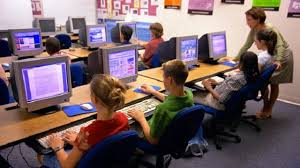
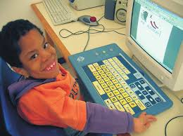
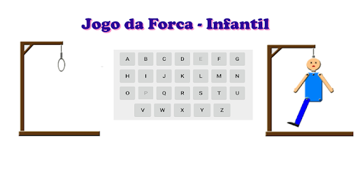
 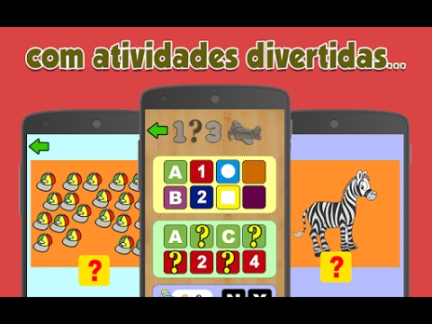
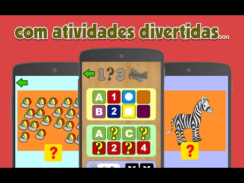
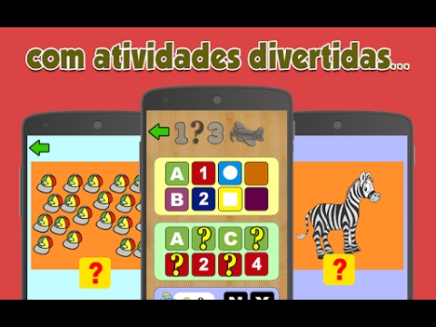
Entenda como usar a tecnologia no dia a dia escolar e como ela pode ajudar os professores e alunos. Mas, em pleno século XXI ainda temos resistência por parte de alguns professores, sabemos que não são todos, mas alguns apresentam algum tipo de questão referente a tecnologia na sala de aula. É sabido que a tecnologia já está inserida neste contexto da sociedade, e sim, nós professores necessitamos nos atualizar.
Especialistas em Educação estão mudando o seu ponto de vista, e sim, veem muitos pontos positivos referente a tecnologia na educação, seja no ensino fundamental ou até mesmo na educação infantil, por que não? Embora, muitos professores sintam-se perdidos, pois não sabem ainda o que fazer com as crianças pequenas.
Atualmente vivemos uma pandemia ao redor do mundo, hoje estamos aprendendo coisas que antes não sabiamos, ou seja, temos que aprender a aprender, o melhor de tudo é saber que podemos usar a tecnologia no nosso dia a dia, basta tirar algumas horas do dia e estudar, pesquisar, fazer cursos, buscando esses recursos, nós iremos a aprender cada vez mais como usufluir da tecnologia ao nosso favor e ajudar os alunos, principalmente os alunos que apresentam alguma deficiência física ou intelectual, nós professores necessitamos nos adequar a realidade dos alunos. Aprendendo a aprender usar a tecnologia, podemos passar aos educandos como devem se comportar usando a tecnologia no dia a dia escolar.
Porém, há uma questão que permeia por toda a Educação, como usar a tecnologia de forma positiva no dia a dia escolar?
Refletindo sobre, sabemos que o Ensino Fundamental é um dos períodos mais longos para os alunos, também é sabido que muitos apresentam dificuldades peculiares, ou seja, o professor necessita arrumar meios para atingir todos os alunos.
Em relação a educação infantil, surgem várias questões por parte dos educadores, isso porque muitos ainda não sabem como atingir os alunos, pois ainda são muito pequenos, outra questão são as famílias, mas essas são perguntas que necessitam um "certo tempo", pois afinal estamos aprendendo a aprender.
Vamos lá em algumas digas de jogos para ajudar principalmente as crianças com dislexia. Que é um transtorno que afeta a leitura e a escrita, muitas crianças apresentam a dislexia, mas elas não têm laudos e não fazem acompanhamentos, a escola por exemplo, não é notificada, logo os professores não sabem o que fazer, mas vale ressaltar que o professor pode detectar esses traços principalmente no início da alfabetização.
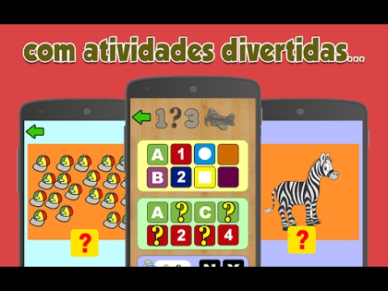
Jogos e atividades para trabalhar na alfabetização com crianças com Transtorno do Espectro do Autismo (TEA), existem três tipos do Espectro o leve, o moderado e o severo. É indicado que essa crianças façam acompanhamento com os profissinais adequados, para que elas se desenvolva e aprendam a socializar melhor pricipalmente na escola.
Jogos e atividades para ajudar crianças com O Transtorno do Déficit de Atenção com Hiperatividade (TDAH).
 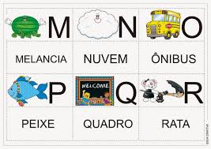
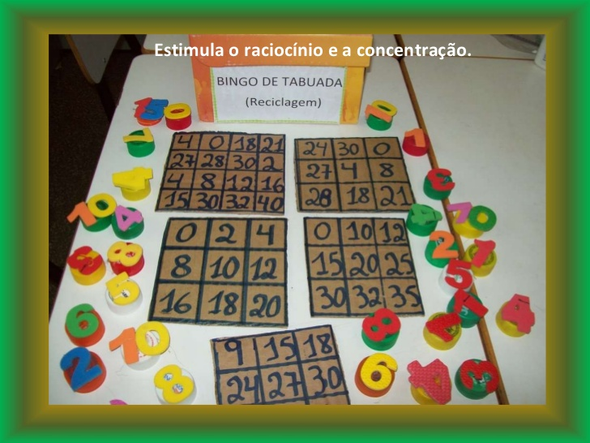
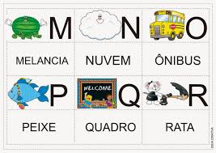
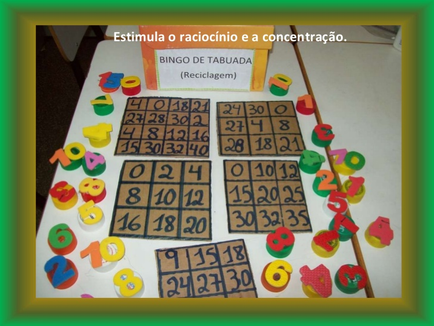
Atualmente vivemos a inclusão no sistema regular de ensino público e privado, o que propicia uma maior interação entre os educandos, o que é muito positivo, mas infelizmente, ainda temos muitas barreiras a serem superadas, principalmente quando se fala de inclusão. Nossa ideia aqui é mostrar que sim, é possível levar a tecnologia para a sala de aula e trabalhar a favor dos educandos e professores. Porém, é necessário que haja recursos e investimentos com os materiais tecnológicos, pois não basta ter apenas as ideias, se não temos os recursos como tablets, computadores com rede de internet (funcionando), jogos instalados para disponibilizar, recursos tecnológicos para trabalhar com alunos com mobilidade reduzida, deficiência física e intelectual. Se as escolas não disponibilizam esses materiais fica difícil o professor oferecer aos alunos em geral um ensino de qualidade atingindo a todos independende de sua necessidade.
Atualmente, a tecnologia proporciona e leva o conhecimento a todos. Graças aos recursos tecnológicos, a educação está sendo transfomada, levando aos educandos oportunidade que antes eles não tinham, inclusive o nível superior, muitas instituições abrem as portas para essas pessoas e a Inclusão também tem um papel super importante.
A educação de qualidade é um direito previsto na legislação brasileira, garantido a todos os indivíduos uma educação de qualidade, mas muitos não tem direito a essa educação, principalmente as pessoas com deficiência que estão inseridas em um sistema que segrega e limita. Sendo assim, a educação inclusiva é uma maneira de proporcionar às pessoas com algum tipo de deficiência, o direito de participar e aprender os conteúdos sem fugir do contexto, e sim ser adaptado de acordo com a necessidade dos educandos que muitas vezes, acabavam sendo mantidos fora da sala de aula. Contudo, a educação inclusiva veio para trazer oportunidades a todos os indivíduos com deficiência, independente das limitações.
Antes, as pessoas com deficiência eram tratadas como pessoas incapazes, que não podia ou não conseguiam fazer algo. Esses paradigmas estão começando a ser quebrado, é possível ver que as pessoas com deficiência estão conquistando os espaços que lhes pertencem, isso graças a inclusão. A inclusão trouxe a essas pessoas motivação, esperança e superação dos desafios.
Através da tecnologia, as pessoas surdas podem ter acesso a dicionários digitais que ajudam as pessoas que não teve acesso a libras, essa é mais uma das alternativas que a tecnologia permite as pessoas com deficiência possam aprender cada vez mais, este recurso está disponível de forma digital.
As pessoas com deficiência visual hoje conseguem frenquentar e estudar em sala regulares, isso tanto no ensino fundamental e médio, não podemos esquecer do ensino superior também, nos dias atuais essas pessoas podem estudar em salas regulares, usando recursos tecnológicos ao seu favor, por exemplo, existem programas que permitem que pessoas com deficiência visual possam estudar de forma autônoma/independente, são eles o Dosvox, Jaws-Job Acess With Speech este software é um leitor de tela permite a leitura do texto na tela ou por saída de voz e braile, além de ler arquivos do word e pdf, este recurso pode ajudar muito as pessoas com deficiência visual.
Veja abaixo alguns links falando do poder e as transformações que a tecnologia faz na educação. Dicas de atividades que podem ser feitas na Educação Infantil e no Ensino Fundamental.